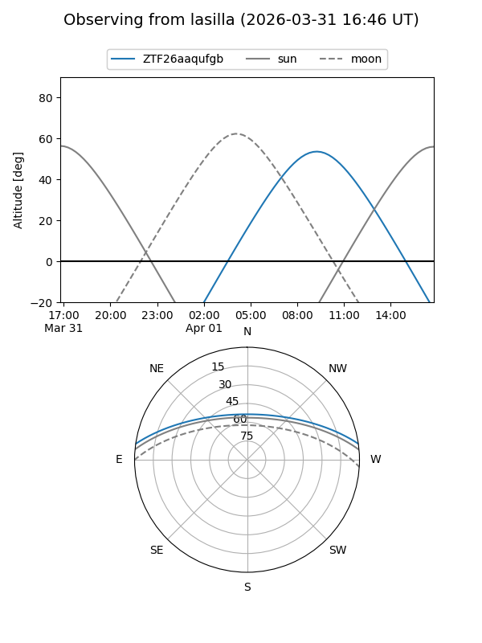
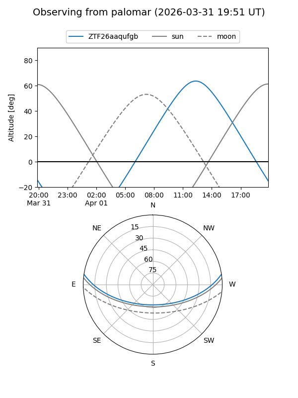

ZTF26aaqufgb
Target ZTF26aaqufgb at 2026-04-01 14:08
Aliases and brokers:
FINK: link
Lasair: link
ALeRCE: link
alt names
ZTF26aaqufgb (ztf,fink_ztf)
Coordinates:
equatorial (ra, dec) = 257.5917,+7.14559
equatorial (HMS+DMS) = 17:10:22.01,+07:08:44.12
galactic (l, b) = (27.6840,+25.70008)
Flags:
Photometry:
last ztfg=17.83, ztfr=17.31
1 ztfg, 1 ztfr detections
Lightcurve
Visibility


Additional plots